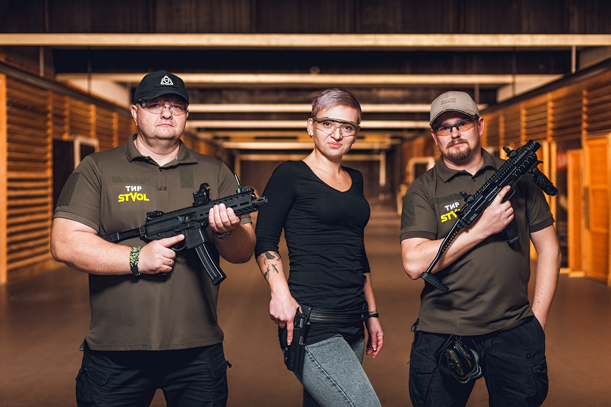
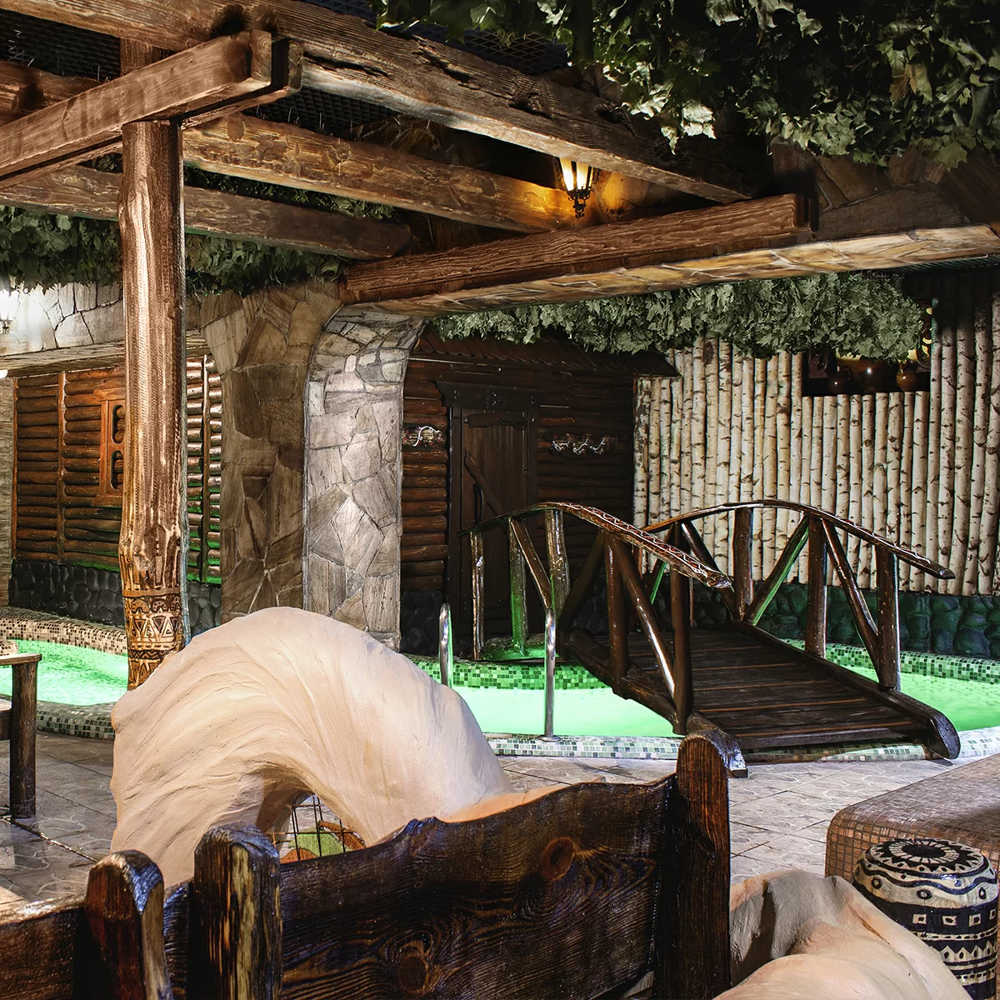

ТОЛЬКО ДО 30/07/2023 ЛЮБОЕ ИЗ РАЗВЛЕЧЕНИЙ 999UAH
УСПЕЙ ЗАКАЗАТЬ!!!
КАРТИНГ-КЛУБ ОДЕССА ЭТО 9000 м² широкой, интересной трассы, конфигурация которой проектируется по евростандартам и меняется каждый месяц Самые быстрые и динамичные карты, привезённые с картодрома Михаэля Шумахера Карты ездят на фирменной резине «Kenda», которая знаменита своим качеством не только в Украине, но и во всём мире Система телеметрии, с детальной распечаткой статистики заезда с учетом до 0,01с
В арсенале клуба — разнообразное спортивное, спортивно-охотничье огнестрельное оружие различных калибров - пистолеты, револьверы, винтовки, карабины (кроме боевого)
Русская и финская парная до 30 человек. Бассейн, комната отдыха, TV/DVD, веники, полотенца, простыни, тапочки, чай, Wi-Fi.
MADE BY RUBANENKO VIKTOR ODESSA 2023